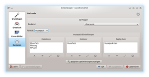
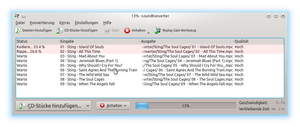
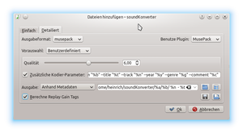
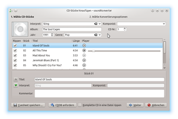
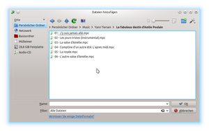

soundKonverter
Dieser Artikel wurde für die folgenden Ubuntu-Versionen getestet:
Ubuntu 16.04 Xenial Xerus
Zum Verständnis dieses Artikels sind folgende Seiten hilfreich:
soundKonverter  ist ein Programm zur Umwandlung von Audiodateien für den KDE-Desktop, natürlich läuft das Programm auch unter Unity oder GNOME. Es dient als "Frontend" für eine Vielzahl von Programmen (FFmpeg, MPlayer, Lame u.a.). Außerdem kann das Programm auch als CD-Ripper verwendet werden, der über eine CDDB die benötigten Daten aus dem Internet beziehen kann, und mit CD-Paranoia die Discs ausliest und dann in dem gewünschte Format abspeichert. Dazu liefert das soundKonverter eine Vielzahl von Profilen mit, die aber verändert und bei Bedarf auch neu angelegt werden können. Zusätzlich lässt sich, wenn das verwendete Format es zulässt, auch Replay Gain berechnen, und bestehende Dateien damit versehen, oder auch bereits vorgenommenen Anpassungen wieder entfernen. Leider existiert keine KDE-Dokumentation zu dem Programm.
ist ein Programm zur Umwandlung von Audiodateien für den KDE-Desktop, natürlich läuft das Programm auch unter Unity oder GNOME. Es dient als "Frontend" für eine Vielzahl von Programmen (FFmpeg, MPlayer, Lame u.a.). Außerdem kann das Programm auch als CD-Ripper verwendet werden, der über eine CDDB die benötigten Daten aus dem Internet beziehen kann, und mit CD-Paranoia die Discs ausliest und dann in dem gewünschte Format abspeichert. Dazu liefert das soundKonverter eine Vielzahl von Profilen mit, die aber verändert und bei Bedarf auch neu angelegt werden können. Zusätzlich lässt sich, wenn das verwendete Format es zulässt, auch Replay Gain berechnen, und bestehende Dateien damit versehen, oder auch bereits vorgenommenen Anpassungen wieder entfernen. Leider existiert keine KDE-Dokumentation zu dem Programm.
Installation¶
Seit Ubuntu 13.10 ist eine recht aktuelle Version des Programms in den Quellen vorhanden. Folgendes Paket muss installiert [1] werden:
soundkonverter (universe)
 mit apturl
mit apturl
Paketliste zum Kopieren:
sudo apt-get install soundkonverter
sudo aptitude install soundkonverter
Dabei werden, wenn noch nicht vorhanden, schon eine Vielzahl von Konvertern mit installiert.
Nach der Installation findet man im Menü eine entsprechende Verknüpfung, mit der sich das Programm starten[3] lässt.
Formate¶
soundkonverter arbeitet mit einer Vielzahl vom Programmen zusammen, und kann daher auch recht exotische Dateien umwandeln. Als Zielformate sind etwas weniger Formate vertreten. soundkonverter kann zudem für viele Formate auch Tags lesen und schreiben, sowie ggf. Cover-Bilder in die Metadaten mit einbeziehen. Diese Daten werden, wenn möglich, bei Konvertierungen auch erhalten.
Hinweis:
Das Umwandeln von einem verlustbehafteten Audioformat in ein Anderes verringert immer die Qualität! Siehe dazu: Generationsverlust.

Für Replay-Gain-Berechnungen können die Programme aacgain, metaflac, mp3gain, vorbisgain, wvgain und mpcgain verwendet werden, damit lassen sich Lautstärke-Anpassungen für folgende Formate durchführen: .m4a, .flac, .mp3, .ogg vorbis, wavpack (.wv) und musepack (.mpc).
Wenn man versucht, eine durch die Standard-Installation nicht abgedecktes Format zu verwenden, kann soundKonverter ggf. Hinweise zu den benötigten Kodieren geben (so werden z.B. Backends für mac und shorten nicht direkt mitinstalliert).
Im Reiter "Einstellungen -> soundKonverter einrichten -> Backends" lassen sich über das Dropdown-Menü die unterstützten Formate anzeigen, nach Auswahl wird im Fenster angezeigt, ob und welche Programme zur de- oder enkodieren vorhanden sind, und ob Replay-Gain-Unterstützung, und wenn ja über welches Programm, gegeben ist.
| Enkodierer/Dekodierer | ||
| Kodierer | Enkodieren | Dekodieren |
| faac | aac, m4a | aac, m4a |
| FFMpeg | ogg vorbis, mp3, flac, wma, aac, m4a, ac3, alac, mp2, amr nb | ogg vorbis, mp3, flac, wma, aac, ac3, alac, mp2, sad, als, amr nb, amr wb, ape, speex, m4a, mp1, musepack, shorten, tta, wavpack, ra, 3gp, rm, avi, mkv, ogv, mpeg, mov, mp4, flv, wmv, rv |
| FLAC | flac | flac |
| LAME | mp3 | mp2, mp3 |
| MPlayer | ogg vorbis, mp3, flac, wma, aac, ac3, alac, mp2, sad, als, amr nb, amr wb, ape, speex, m4a, mp1, musepack, shorten, tta, wavpack, ra, 3gp, rm, avi, mkv, ogv, mpeg, mov, mp4, flv, wmv, rv | |
| neroaac | m4a | m4a |
| timidity | midi, mod | |
| fluidsynth | midi, mod | |
| vorbistools | ogg vorbis | ogg vorbis |
| twolame | mp2 | |
| musepack | musepack | musepack |
| flake | flac | |
| wavpack | wavpack | wavpack |
| ttaenc | tta | tta |
| speex | speex | speex |
| Opus | opusenc | opusdec |
Konfiguration¶
Über "Einstellungen -> soundKonverter einrichten..." findet man Möglichkeiten, die "Grundlagen"-Werte zum Startmodus, Standardformat und -qualität festzulegen, sowie Angaben zum Umgang mit bereits bestehenden Dateinamen, Erstellen von Album-Replay-Gain-Tags (standardmäßig sinnvollerweise aktiviert). Speziellere Angaben finden sich unter "Erweitert", unter "Cover" wird festgelegt, ob und wie Cover eingebunden werden sollen. Unter "Backends" finden sich Angaben zu den installierten Kodier-Programmen. Wenn möglich, lassen sich zu den in den Fenstern aufgelisteten Plugins Einstellungen vornehmen (die Schaltfläche unter den Fenstern mit dem Werkzeug ist aktivierbar). Bei mehreren Plugins kann zudem die Priorität festgelegt werden mit der die die Programme standardmäßig verwendet werden sollen; mit den Pfeiltasten unter den lässt sie die Reihenfolge festlegen. Die oben stehenden Programme werden bevorzugt verwendet, wenn keine andere Angabe erfolgt. Über "Mögliche Optimierungen anzeigen" überprüft das Programm, ob die sinnvollsten Verknüpfungen zwischen Formaten und den Backends erstellt worden sind, und korrigiert diese, wenn gewünscht.
Weitere Informationen zu den verwendbaren Programmen und Formaten lassen sich über "Hilfe -> Über Plugins" einsehen, dort werden auch die zwar theoretisch möglichen, aber aufgrund fehlender Programme nicht verwendbaren Formate aufgelistet (rote Schrift).

Bedienung¶
Die Start-Oberfläche ist recht übersichtlich und in deutscher Sprache verfügbar. Zunächst werden über "Dateien hinzufügen..." die gewünschten Verzeichnisse oder einzelnen Dateien aufgerufen. Es öffnet sich ein Fenster zur Einstellung des gewünschten Formats, in dem sehr dezidierte Angaben zu den verschiedenen Kodierern gemacht werden können. In der "Einfach"-Ansicht lassen sich auch kurze Informationen (Schaltfläche "Info") zu den verschiedenen Formaten/Programmen abrufen. Für viele Formate lassen sich z.B. unterschiedliche Qualitätsstufen, oder dir Verwendung variabler Bitraten festlegen. Für unterstützte Formate kann auch gleich die Erstellung einer Replay-Gain-Berechnung (Checkbox rechts unten) vorgenommen werden.
Standardeinstellung für die Abspeicherung der Daten ist
/home/BENUTZER/soundKonverter/%b/%d - %n - %a - %t
 Damit werden die Dateien im Homeverzeichnis unter /soundKonverter/ALBUM/CD-NUMMER - TRACKNUMMER - KÜNSTLER - TITEL.ENDUNG abgespeichert, was vielleicht nicht jedem gefällt. Per Tooltip werden im Eingabefenster die zur Ordner/Namenserstellung verwendbaren Parameter ausgegeben. Die Angaben lassen sich für jeden Kodierer auch als eigene Profile abspeichern (Speicher-Schaltfläche links unten) bzw. gespeicherte Profile auch wieder aufrufen (Schaltfläche daneben, wenn bereits Profile erstellt wurden).
Zusätzliche Optionen können angegeben werden. Um unter musepack aussagekräftige Tags zu erstellen, wäre das z.B.
--artist "%a" --album "%b" --title "%t" --track "%n" --year "%y" --genre "%g" --comment "%c"
Bei Verwendung von musepack in SV8 (Encodierer mpcenc) für mpc-Dateien werden UTF8-kompatible APE-Tags erstellt, sodass eine Nachbearbeitung mit Tagger-Programmen hier nicht nötig ist. Bei mit dem Kodierer mppenc (Version SV7 des Programms) erstellten Dateien werden in den Tags Umlaute und Sonderzeichen nicht richtig dargestellt.
Mit "Starten" wird dann die Konvertierung eingeleitet, die bereits umgewandelten Dateien werden aus dem Fenster gelöscht. Die Dateien werden dann in der angegebenen Ordner/Dateinamen-Struktur abgelegt.

CDs rippen¶
Über "CD-Stücke hinzufügen" lassen sich die CD-Laufwerke ansteuern, bei mehreren wird zunächst abgefragt, welches verwendet werden soll. Es öffnet sich ein Editorfenster, in dem die Daten angezeigt werden. Bei Bedarf können die Informationen erneut aus dem Internet/CDDB bezogen und ggf. korrigiert und erweitert (Kommentar etc.) werden. Im nächsten Fenster wird der zu verwendende Kodierer eingestellt, und Angaben zum Abspeicherort/Dateinamensmuster gemacht.
Der Dialog entspricht weitgehend dem für die Konvertierung (siehe oben).

Replay Gain¶
Über die Schaltfläche "Replay Gain Werkzeug" wird ein Fenster aufgerufen, über das man ganze Verzeichnisse oder einzelne Dateien aufrufen kann, für die Berechnungen durchgeführt werden sollen. Dabei lassen sich auch unterschiedliche Formate zusammen angeben, das Programm verwendet das jeweils richtige Programm dazu. Falls das gewünschte Format nicht angezeigt wird, kann man über einen "Link" ("Vermissen Sie einige Dateiformate?") Informationen zu ggf. fehlenden Programmen aufrufen. Die Berechnungen, die als Tags an die Dateien angehängt werden, können auch wieder entfernt werden. Falls schon Berechnungen vorliegen, kann auch eine Neuberechnung erzwungen werden. Nach erfolgreicher Berechnung werden die Daten grünlich hinterlegt; bei Fehlern ist der Hintergrund rötlich.
Kommandozeilenoptionen¶
Für soundKonverter können beim Start im Terminal[5] gleich Optionen mitgegeben werden, die dann sofort abgearbeitet werden. So kann man z.B. das gewünschte Laufwerk angeben, und das Programm anweisen, direkt mit dem eingestellten Profil das Auslesen zu starten - sinnvoll z.B., wenn man CDs immer im gleichen Format ins gleiche Musikverzeichnis rippen möchte. Beispiel dafür:
soundKonverter --rip /dev/sr1 --autostart
Mit --invisible wird die Oberfläche gar nicht aufgerufen, der Prozess läuft im Hintergrund ab, und wird nach dem angegeben Prozess beendet. Weitere Optionen finden sich in der Hilfefunktion (Aufruf mit dem Befehl soundKonverter --help), eine manpage scheint nicht zu existieren.
Problembehebung¶
Um Problemen auf den Grund zu gehen, ist "Konvertierung -> Protokolle anzeigen" ggf. sinnvoll. Darüber kann das aktuelle Log eingesehen werden, aus dem hervorgeht, welche En-/Dekodierer und Replay-Gain-Programme verfügbar sind, außerdem werden alle Aktionen geloggt, und ggf. Fehlerausgaben bei der Verarbeitung aufgezeichnet.
mpcgain-Berechnungen rückgängig machen¶
Mit mpcgain erstellte Berechnungen lassen sich momentan über soundKonverter nicht rückgängig machen! Das Replay-Gain-Werkzeug startet bei dem Versuch zwar, hängt sich dann aber auf, und lässt sich weder unterbrechen noch beenden, noch können die Dateien wieder entfernt werden. Im Log gibt es leider keine Angaben dazu. Das Programm muss dann komplett beendet werden. Das Entfernen der Replay-Gain-Tags hatte der Entwickler zwar entfernt, allerdings sollte das Fenster eigentlich bedienbar bleiben. Ein Lösung ist bisher nicht bekannt, der Entwickler ist über das Problem informiert. Die git-Version umgeht zumindest das Abstürzen - die Dateien werden im Fenster nur orange hinterlegt angezeigt, und das Fenster bleibt bedienbar.
CD-Laufwerk auswählen¶
In der Version aus dem Quellen versucht soundKonverter standardmäßig, das CD-Laufwerk unter /dev/scd0 zu finden. Wenn dieses Verzeichnis nicht existiert, muss zunächst eine Verknüpfung auf eine tatsächlich existierende Laufwerkskennung, z.B. per
sudo ln -s /dev/sr0 /dev/scd0
angelegt werden. Allerdings verschwindet die Verknüpfung nach jedem Neustart wieder! Innerhalb des Programms gibt es keine Möglichkeit, ggf. ein zweites CD-Laufwerk anzugeben, allerdings kann man soundKonverter im Terminal mit dem gewünschten Laufwerk starten, z.B. mit
soundkonverter /dev/sr1
So würde zunächst das zweite Laufwerk angesteuert. Innerhalb des Programms kann dann auch das per Verknüpfung angesteuerte erste verwendet werden, sodass auch parallel ausgelesen werden kann.
Exkurs - mpcgain verwenden¶
Um mpcgain tatsächlich verwenden zu können, ist leider etwas Vorarbeit nötig. Das in den Ubuntu-Quellen vorliegende Paket musepack-tools installiert eine mpcgain-Version, die mit dem ebenfalls in den Quellen vorliegendem Kodierer (Paket mppenc) nicht kompatibel ist - mppenc encodiert in Version SV7, während mpcgain für Version SV8 vorhanden ist. Für Version SV8 ist aber kein eigener Quellcode/Paket greifbar, in Version SV8 wird heißt das Programm zudem mpcenc. Es liegt zwar ein Archiv mit für Linux erstellte Binär-Daten vor, allerdings nicht für 64-bit-Systeme.
Daher muss musepack quasi komplett neu erstellt werden. Den benötigten Quellcode kann man via SVN herunterladen:
svn export http://svn.musepack.net/libmpc/trunk libmpc svn export http://svn.musepack.net/libcuefile/trunk libcuefile svn export http://svn.musepack.net/libreplaygain libreplaygain
Zunächst sollte man sich die Build-Abhängigkeiten für musepack-tools installieren, z.B. mit
sudo apt-get builddep musepack-tools
In den einzelnen Ordnern wird dann mit cMake kompiliert, zwar zunächst im libcuefile-Verzeichnis
cmake -G "Unix Makefiles" make sudo checkinstall
und dann entsprechend im libreplaygain-Verzeichnis. Um dann die in musepack-tools vorliegenden Binär-Dateien zu kompilieren, muss der Ort des CUEFILE_INCLUDE_DIR angegeben werden. Eigentlich sollten die benötigten Daten im Paket cuetools enthalten sein. Die Musepack-Entwickler haben aber ihrer libcuefile-Version ein eigenes include-Verzeichnis mit den benötigten Daten mitgegeben. Bei der Kompilierung im libmpc-Verzeichnis muss dem cMake-Befehl der Pfad dorthin mitgegeben werden, also etwas wie
cmake -DCUEFILE_INCLUDE_DIR:PATH=/PFAD/ZUM/VERZEICHNIS/libcuefile/include make sudo checkinstall
Als Namen kann man in checkinstall auch musepack-tools angeben, damit würde das Paket dann ersetzt.
soundKonverter erkennt auch mpcenc, verwendet aber als "erste Wahl" mppenc, und somit die alte Version, wenn im System vorhanden. Ggf. muss in /usr/local/bin noch eine symbolische Verknüpfung mppenc auf mpcenc gelegt werden, damit auch Programme, die mppenc erwarten, auf die neue Version zurückgreifen können. Ggf. reicht es auch aus, diese Verknüpfung für die im musepack-tools vorliegende Programmversion durchzuführen, allerdings ist die Grundlage in den Quellen eine ältere Revision (r459), aktuell ist r495 (Dez. 2017).
"Alte" .mpc-Dateien (Version SV7) können allerdings so nicht von mpcgain verarbeitet werden, dazu müssten sie zunächst - mit dem Programm mpc2sv8 - in die neuere Version umgewandelt werden.
Links¶
Replay-Gain-Einführung
 auf audiohq.de
auf audiohq.deMusepack
ProjektseiteAudiodateien umwandeln
 Konvertierungsprogramme
KonvertierungsprogrammeCDs rippen
Programmübersicht
- Erstellt mit Inyoka
-
 2004 – 2017 ubuntuusers.de • Einige Rechte vorbehalten
2004 – 2017 ubuntuusers.de • Einige Rechte vorbehalten
Lizenz • Kontakt • Datenschutz • Impressum • Serverstatus -
Serverhousing gespendet von